Mantenha o foco por mais tempo
Um tabuleiro exige toda a sua atenção do primeiro ao último número. Pratique sustentá-la sem se dispersar e veja seus lapsos de foco diminuírem nas Estatísticas.
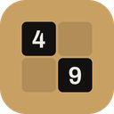
49 Entrar no betaBeta aberto para iPhone
O 49 transforma a tabela de Schulte, um exercício clássico de atenção, em um jogo que você vai querer jogar todo dia. Encontre os números de 1 a 49 em ordem, o mais rápido que puder, e pratique o foco de que você precisa para ler, estudar e trabalhar.
Por que jogar
Cada tabuleiro pede que seu cérebro sustente a atenção, faça varreduras rápidas e ignore distrações. Jogue um minuto por dia e pratique as habilidades que você usa sempre que lê, estuda ou trabalha.
Um tabuleiro exige toda a sua atenção do primeiro ao último número. Pratique sustentá-la sem se dispersar e veja seus lapsos de foco diminuírem nas Estatísticas.
As tabelas de Schulte são presença garantida em cursos de leitura dinâmica. Manter os olhos parados e captar mais do tabuleiro a cada olhada é a mesma habilidade que permite ler em blocos maiores.
Achar o próximo número depressa é busca visual: a mesma habilidade de encontrar uma linha em um documento, um nome em uma lista ou uma placa na estrada.
Nos tabuleiros Vermelho e Preto, você conta os vermelhos em um sentido e os pretos no outro, alternando a cada toque. Um treino divertido para passar de uma tarefa a outra sem perder o fio.
Um erro custa tempo, e um toque apressado custa ainda mais. Você aprende a se recompor num instante e seguir em frente, em vez de deixar um deslize virar uma bola de neve.
Um tabuleiro é um aquecimento de um minuto que traz sua mente para o presente. Jogue antes de estudar, antes de um trabalho que exige concentração ou sempre que seus pensamentos estiverem dispersos.
O 49 é um jogo para praticar o foco, não um produto médico. O progresso de cada pessoa é diferente.
Um minuto por dia
O foco cresce com prática regular, por isso o 49 foi feito para virar hábito: curto o bastante para caber em qualquer lugar, divertido o bastante para você voltar amanhã.
Como funciona
Uma tabela de Schulte é uma grade de números embaralhados que você encontra em ordem, o mais rápido possível. Batizada em homenagem ao psiquiatra alemão Walter Schulte, ela é usada há décadas para praticar atenção, busca visual e leitura dinâmica.
O segredo é parar de caçar número por número. Fixe o olhar perto do centro e deixe o próximo número vir até você. Quanto mais você joga, mais amplo parece seu campo de atenção, e mais rápidos ficam seus tempos. O 49 acrescenta o que a versão em papel nunca teve: modos, pontuações, sequências e o registro de cada partida.
Temas
Escolha um tema, uma paleta de cores e o modo claro ou escuro. A tela mostra exatamente como seu jogo vai ficar no app, e esta página inteira se veste para combinar.
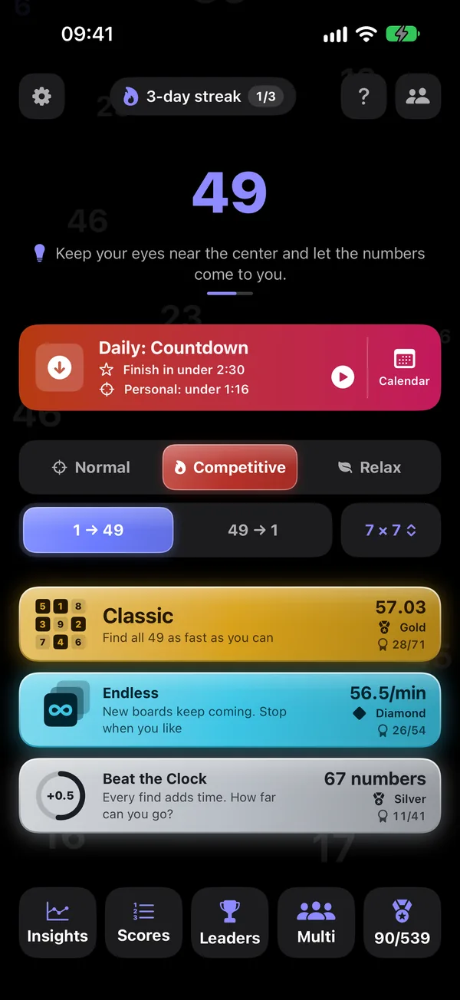
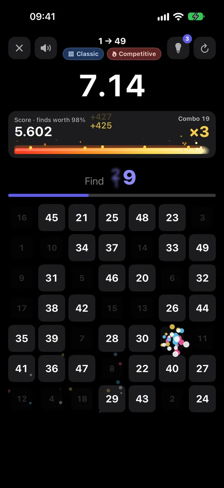
O 49 original: limpo, simples e familiar.
Cores AparênciaNo app, você pode ajustar cada tema ainda mais: cor de destaque, cores das peças e dos números, formato das peças, fonte e ícone do app. Ou crie seu próprio tema do zero em sete passos.
Formas de jogar
Um tabuleiro, um tempo. Supere seu recorde, suba de Novato a Lenda e veja exatamente onde os segundos foram parar.
Termine um tabuleiro e o próximo já está esperando. Por quanto tempo você consegue manter o embalo?
O relógio corre contra você. Cada número que você encontra devolve tempo, cada erro tira um pouco.
Estilos
Todo modo pode ser jogado em três estilos, e cada estilo guarda seus próprios recordes e patentes.
Só você, o tabuleiro e o relógio. Sem efeitos, sem pontos, nada para tirar seus olhos dos números. Esta é a tabela de Schulte clássica, e o teste mais puro do seu foco.
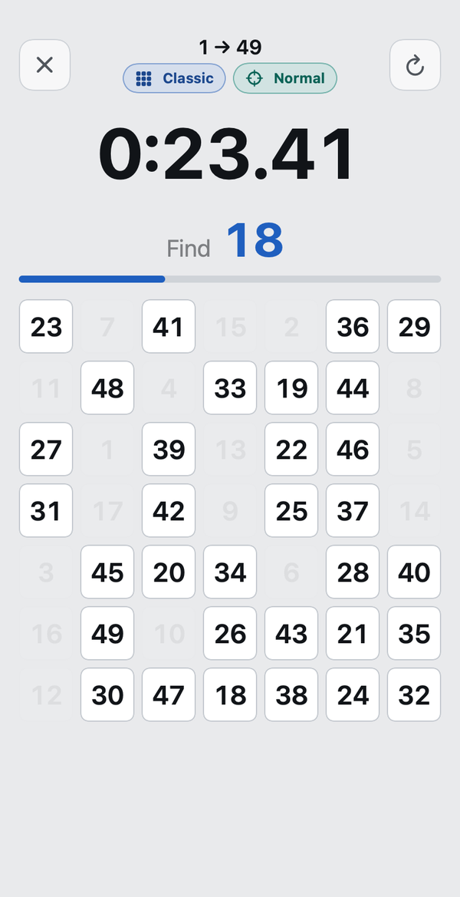
Cada número vale 100 pontos, mais um bônus de velocidade de até 50, que diminui quanto mais você demora para encontrá-lo. Encontre o próximo antes que o tempo do combo acabe e seu multiplicador sobe.
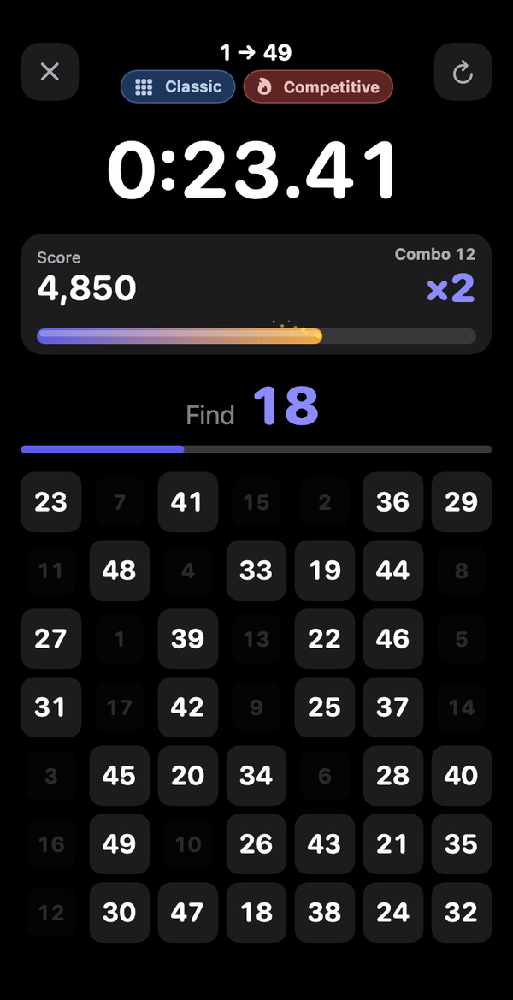
Quer os efeitos sem a pressão? O Relax mantém os sons e as comemorações e deixa os pontos de lado.
Recursos
O mesmo tabuleiro para todos, todo dia, com uma meta a cumprir. Mantenha sua sequência viva.
Bronze, Prata, Ouro, Platina, Diamante e Lenda em cada modo, além de conquistas por velocidade, sequências, combos e partidas sem erros.
Cada partida rende XP pelo que você fez bem: partidas perfeitas, combos, ritmo rápido, novos recordes e missões. Veja a barra encher e suba de nível.
Seus pontos cegos no tabuleiro, seu horário mais rápido do dia, a regularidade do seu jogo e os erros que você mais comete.
Rankings do Game Center para cada modo e tabuleiro: de hoje, desta semana, deste mês e de todos os tempos. Desafie seus amigos a superar seu tempo.
Números, Letras, Vermelho e Preto (conte em dois sentidos ao mesmo tempo) e Móvel, em que as peças trocam de lugar enquanto você joga. De 5 × 5 a 7 × 7, além de 9 × 9 e 11 × 11 para quem leva a sério.
Um sino suave e tranquilo e um piano delicado, notas melódicas que sobem a cada acerto, pops e gotas divertidos, cliques nítidos e instrumentos clássicos. As recompensas soam no piano.
Depois de cada partida, uma frase sobre seu maior avanço: uma área fraca que ficou mais rápida, menos quedas de foco, uma cadência mais regular. Não só o tempo.
Uma dica mostra onde está o próximo número. Você ganha algumas por dia; cada uma soma 5 segundos, então as dicas ajudam a aprender, mas nunca rendem um recorde.
Suporte completo ao VoiceOver, Reduzir Movimento, Texto em Negrito e gráficos que você pode ouvir como Gráficos de Áudio. Desative confetes, flashes ou vibração nos ajustes de Acessibilidade.
Sem conta. Suas partidas, pontuações e estatísticas ficam guardadas no seu iPhone. Jogue como convidado sempre que um amigo quiser tentar.
Patentes e conquistas
Cada modo, direção e estilo tem sua própria patente, definida pelo seu melhor resultado ali. E 539 conquistas recompensam velocidade, precisão, foco, combos, sequências e curiosidade.
O que cada patente exige no tabuleiro padrão 7 × 7. Os tempos se ajustam para tabuleiros menores, maiores e mais difíceis.
| Patente | Clássico | Ritmo no Infinito | Contra o Relógio |
|---|---|---|---|
| Termine uma partida | Termine um tabuleiro | Jogue uma rodada | |
| Menos de 2:00 | 25/min | 30 | |
| Menos de 1:30 | 32/min | 50 | |
| Menos de 1:10 | 40/min | 70 | |
| Menos de 0:55 | 48/min | 90 | |
| Menos de 0:45 | 56/min | 115 | |
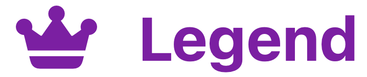 | Menos de 0:35 | 65/min | 140 |
As conquistas em níveis passam por oito medalhas, do bronze ao prismático.
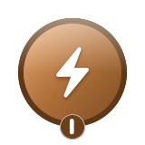
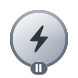
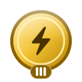
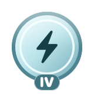
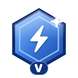
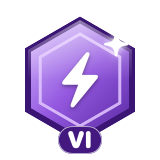
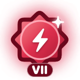
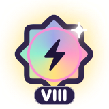
Desafio Diário
Cada dia traz um novo desafio com uma surpresa e uma meta: bater um tempo, jogar sem errar, manter o foco ou sustentar uma cadência regular. Todos recebem o mesmo tabuleiro, então você pode comparar com os amigos.
Cumpra a meta para manter sua sequência viva, acompanhe tudo no calendário e, se quiser, defina também sua própria meta pessoal.
Multijogador
Jogue 1 contra 1, 2 contra 2 ou com um grupo inteiro, de uma turma da escola a uma equipe do trabalho. Todos recebem exatamente o mesmo tabuleiro, então a única diferença é o foco. Crie uma sala, compartilhe o código, o QR code ou o link, e escolha um apelido para a partida.
O mesmo tabuleiro para todos, rodada após rodada. O mais rápido vence cada rodada, e os pontos se somam na classificação final.
A classificação é pelos pontos do Competitivo, então velocidade e combos contam. Uma sequência limpa e rápida pode vencer uma partida mais veloz, mas cheia de erros.
Para grupos: o jogador mais lento de cada rodada é eliminado, até restar só um.
Jogue um tabuleiro e seus amigos correm contra a sua partida quando quiserem naquele dia, vendo ao vivo se estão "à frente ou atrás" enquanto jogam.
Um tabuleiro, ao vivo, cara a cara. Quem tocar um número primeiro marca o ponto, e ele some para o outro jogador.
Um código de sala de quatro caracteres, um QR code para escanear ou um link para tocar. Seu próprio apelido em cada partida, já que os nomes do Game Center costumam ser aleatórios.
Rankings
Rankings globais do Game Center para cada forma de jogar, além das suas próprias pontuações classificadas no seu iPhone.
Menor tempo e mais pontos em cada tabuleiro: Padrão, Vermelho e Preto, Móvel e Letras, de 5 × 5 a 11 × 11, em ordem crescente e decrescente. Melhor ritmo no Infinito, mais números no Contra o Relógio.
O Desafio Diário tem seus próprios rankings de menor tempo e de mais pontos, renovados todo dia. Sua primeira tentativa é a que conta.
Cada partida que você joga também é classificada no seu iPhone, por tempo ou por pontos, sem precisar de conta. Partidas de convidado nunca afetam suas pontuações nem os rankings globais.
Preço
Todos os modos, tabuleiros, visuais e sons são grátis. Nada fica bloqueado.
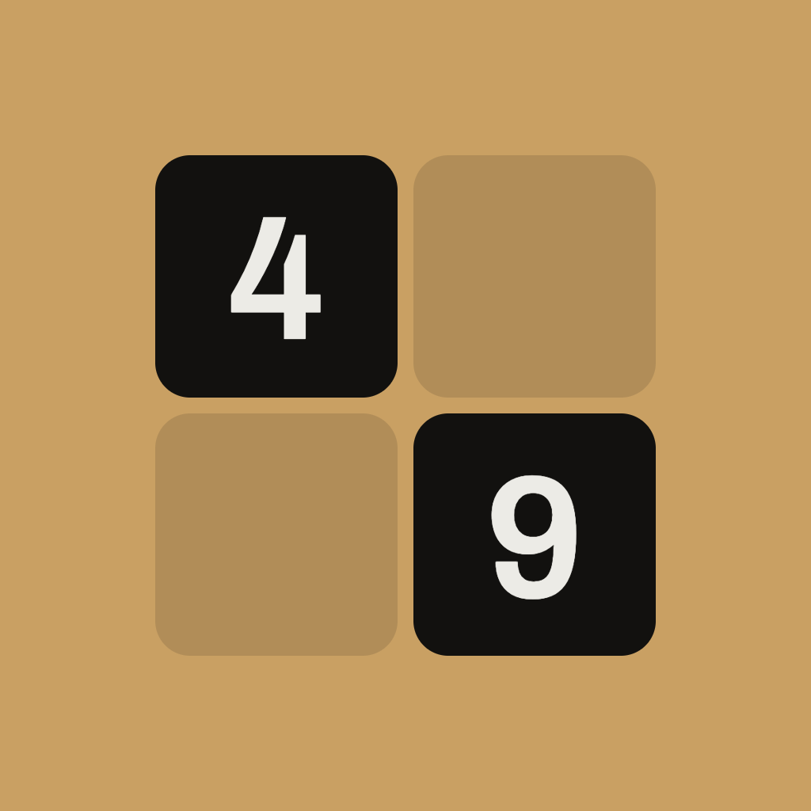
O 49 está em beta aberto no TestFlight, o app da Apple para testar apps novos. É grátis: instale o TestFlight e depois toque no botão abaixo no seu iPhone.
Entrar no beta pelo TestFlightPrefere esperar a App Store? Deixe seu e-mail e avisamos quando o 49 sair. Só isso.
Você está na lista! Vamos escrever quando o 49 chegar à App Store.
Não deu para enviar. Tente de novo ou escreva para contact49game@icloud.com.
Só vamos escrever sobre o lançamento, e tiramos você da lista quando pedir. Política de privacidade
Perguntas frequentes
Em breve. O 49 está em beta aberto agora: entre pelo TestFlight com o botão acima. Depois ele chega à App Store para iPhone.
O Normal é uma prova de tempo pura: sem efeitos e sem pontos, só o seu tempo. O Competitivo adiciona pontos, combos e um multiplicador de até ×3, com efeitos e sons que crescem conforme você joga. Cada estilo tem seus próprios recordes e patentes.
Cada número vale 100 pontos, mais um bônus de velocidade de até 50, que diminui quanto mais você demora. Um combo de 5 dobra seus pontos, e um combo de 15 os triplica. Se o tempo do combo acabar, o combo é perdido, e um toque errado o corta pela metade. Os números perdem valor aos poucos conforme a partida avança, então estudar o tabuleiro antes de começar nunca compensa.
Sim. Todos os modos, tabuleiros, visuais e recursos são grátis. Quem joga de graça vê um anúncio entre algumas partidas, nunca durante uma. O Premium remove os anúncios, e você também pode assistir a um anúncio para ficar 30 minutos sem nenhum.
Sim. O Multijogador tem salas 1 contra 1, 2 contra 2 e em grupo, com Corrida, Batalha de pontos, Eliminatória e Corrida fantasma. Todos jogam o mesmo tabuleiro; os amigos entram com um código, um QR code ou um link. Você também pode passar o celular de mão em mão no modo convidado.
Um iPhone com iOS 17 ou posterior.
Uma grade de números embaralhados que você encontra em ordem, o mais rápido possível. É um exercício clássico de atenção, busca visual e leitura dinâmica, batizado em homenagem ao psiquiatra Walter Schulte.
Você vai ver seus tempos, seu ritmo e sua precisão melhorarem conforme joga, e as Estatísticas mostram onde. O 49 é um jogo para praticar o foco, não um produto médico: ele não diagnostica, não trata e não previne nenhuma condição.
Inglês, polonês, alemão, francês, espanhol, português do Brasil, italiano, japonês e coreano.
Suas partidas, pontuações e estatísticas ficam no seu iPhone, e não há conta. Para melhorar o jogo, o app também envia estatísticas de uso anônimas (sem nomes nem histórico de partidas), que você pode desativar nos Ajustes. O Game Center é opcional. Os anúncios da versão gratuita vêm de uma rede de anúncios, que pode coletar alguns dados para exibi-los; o Premium os remove. Veja os detalhes na política de privacidade.
Abra Ajustes → Premium no app e toque em Restaurar Compras, com a sessão iniciada na mesma Conta Apple usada na compra.
No momento, não. O 49 é feito para iPhone.